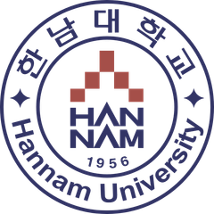
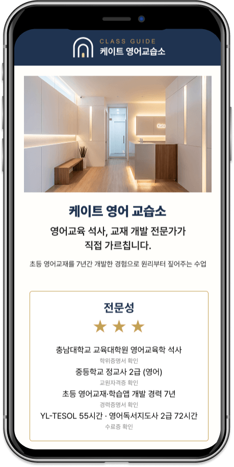
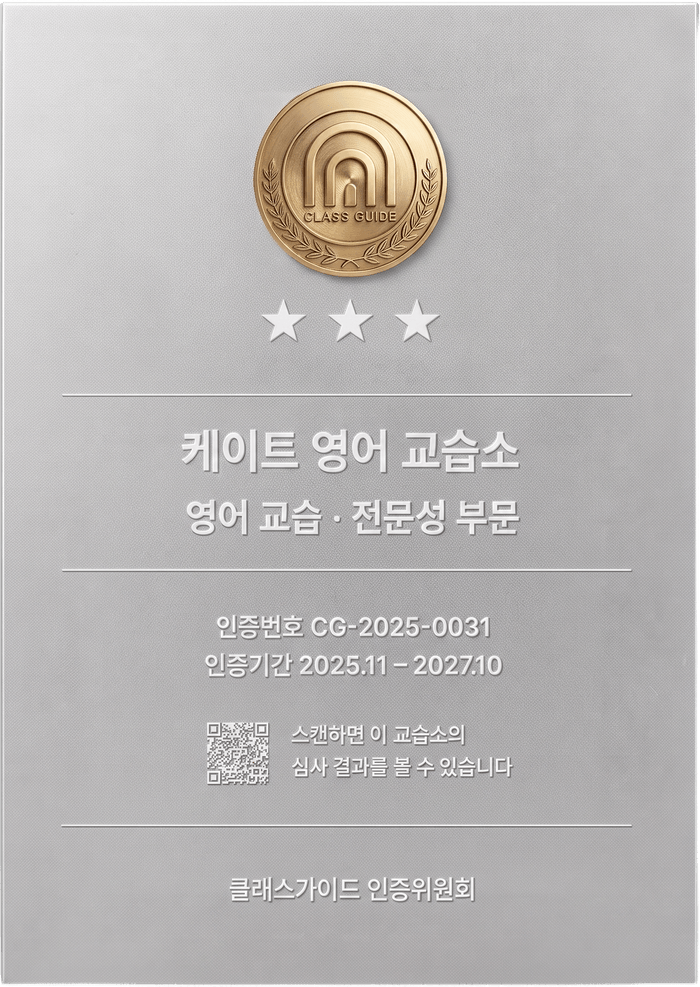
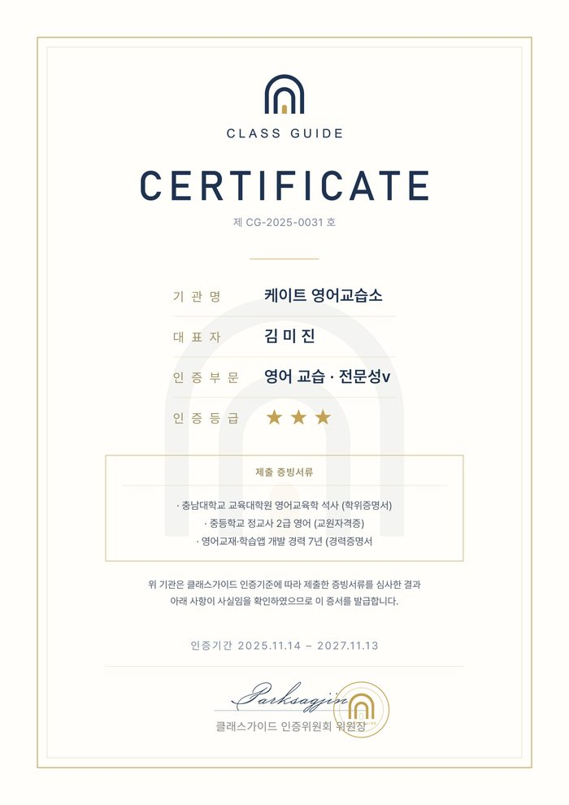
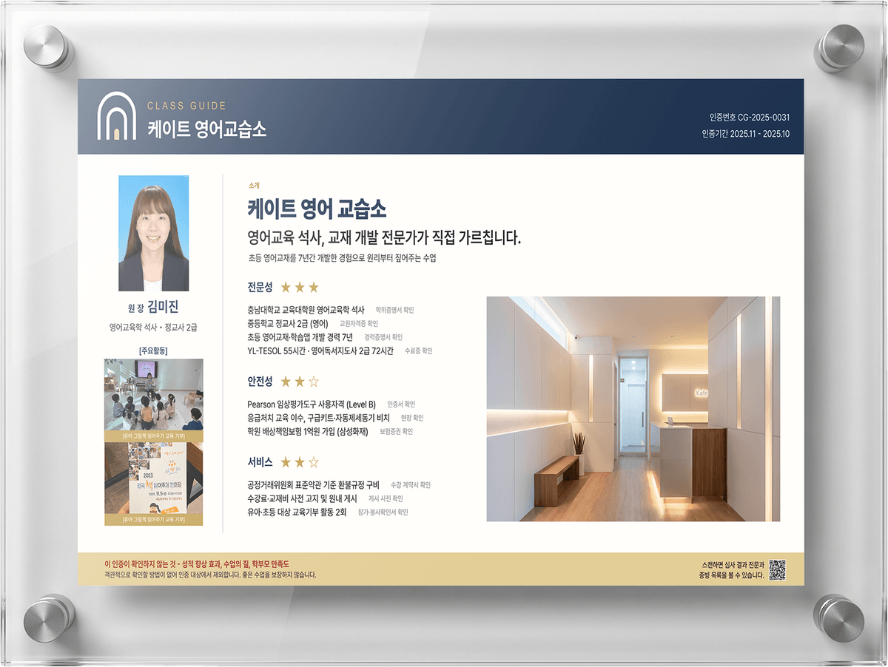

산학협력 연구개발로 만들어진 신뢰할 수 있는 학원 · 교습소 인증 제도
좋은 학원이라는 말을, 확인 가능한 근거로 바꿉니다
01. 클래스 가이드 소개
확인할 수 없는 말과,
확인된 사실은 다릅니다
클래스 가이드는 학원의 강점을 체계적으로 정리해 확인 가능한 정보로 제공하고, 학부모가 신뢰하고 선택할 수 있도록 돕는 검증 기반의 학원 정보 시스템입니다. 일회성 수상이 아닌, 확인 가능한 정보와 기준에 기반한 지속 가능한 신뢰 시스템을 지향합니다.
일반 홍보 문구
- 최고의 영어교육 강사진
- 전문화된 커리큘럼
- 학부모 만족도 최상위
확인할 방법이 없습니다
클래스가이드 표기
- 영어교육학 석사 · 정교사 2급
- 영어교재·학습앱 개발 경력 7년
- TESOL 55시간 · 영어독서지도사 2급
모두 서류로 확인된 사실
02. 검증과 운영
세 가지를 확인합니다.
그 밖의 것은 확인하지 않습니다
클래스 가이드는 외부 전문자문기관이 3개월마다 샘플 검사를 진행하고, 학원의 핵심정보를 쉽고 빠르게 확인할 수 있도록 서비스를 제공합니다.
어떻게 만들어졌나요
클래스가이드의 평가기준은 한 회사가 임의로 정한 것이 아닙니다.
대학과 교육기업이 산학협력 공동연구로 함께 개발했습니다.
- 산학협력 과제번호 10-2026-0081488
- 특허출원 26-0813-113113

한남대학교
70년 전통 사범대학
산학협력 연구개발
전문 교육기업
국제학교 커리큘럼 개발
2025 외교부장관상 수상
CLASS GUIDE
공동연구로 개발한
학원·교습소 인증 제도
누가 감독하나요
외부 전문자문기관이 3개월마다 인증 학원을 무작위로 뽑아, 제출한 서류와 실제가 같은지 다시 확인합니다.
*자문위원은 개인 자격으로 참여하며, 소속 기관은 본 인증사업을 후원하거나 승인하지 않습니다.
카이스트
○○○ 교수
교육공학
한밭대학교
○○○ 교수
아동안전
한국소비자평가원
○○○
소비자보호
무엇을 확인하나요
확인하지 않는 것 — 성적 향상 효과, 수업의 질, 학부모 만족도
객관적으로 확인할 방법이 없어 인증 대상에서 제외합니다.
클래스가이드 인증은 좋은 수업을 보장하지 않습니다. 확인 가능한 사실을 확인해 드릴 뿐입니다.
전문성
전공과 학위
보유 자격증
강의·개발 경력
외부 실적
안전성
응급대응 자격
안전설비 보유
배상책임보험
아동 평가도구 자격
서비스
계약서와 환불 규정
수강료 고지 방식
민원 처리 절차
지역 교육기부
어떻게 확인하나요
학원이 낸 서류를 정해진 체크리스트와 하나씩 맞춰봅니다. 인증 후에도 3개월마다 표본 점검을 하고, 2년이 지나면 처음부터 다시 확인합니다.

QR을 찍으면 모든 사실 아래에 무엇으로 확인했는지가 함께 적혀 있습니다.
| 기준에 미달하면 인증하지 않으며 심사비는 돌려주지 않습니다.
| 허위 서류가 확인되면 인증을 취소하고 그 사실을 공개합니다.
02 · 학원 입구에서
문 옆에 무엇이 걸리는지 자세히 보세요
인증 학원은 메탈 현판과 검증 보드를 함께 받습니다. A4 세로와 A3 가로는 둘 다 297mm라 나란히 걸면 위아래 선이 정확히 맞습니다.



SURVEY
학부모님의 의견을 듣고
준비하고 있습니다.
클래스가이드는 아직 준비 중인 제도입니다. 이 인증이 실제로 도움이 될지, 어떤 점이 부족한지 솔직하게 알려주세요.
설문 참여하기
04. 클래스가이드 사회공헌
인증으로 얻은 것을, 아이들에게 돌려줍니다
클래스 가이드는 심사비의 일정 비율을 공익 활동에 적립하고, 적립액과 사용 내역은 매년 공개합니다.
한남대학교
장학금 전달
인증 학원의 추천으로 학생 5명 선발, 최종 선발은 대학 장학위원회가 맡습니다.
12.20 예정(일정 변경 가능성 있음)
국민일보
우수학생 시상
국민일보 브랜드대상 우수학생 부문에서 학생 2명을 시상합니다.
12.28 예정(일정 변경 가능성 있음)
천양원
아동복지 기부
심사비의 일정 비율을 적립해 아동복지시설 천양원에 기부합니다.
연 1회 내역 공개